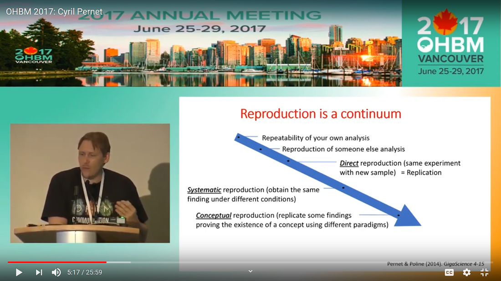

|
Written by: Claude Bajada, Fakhereh Movahedian Attar, Ilona Lipp Expert reviewers: Adina Wagner, Cyril Pernet Newbie editors: Yana Dimech, Renzo Torrecuso This post is about good neuroimaging practices. ‘Practices’ relates to all aspects of conducting research. By ‘good’, we mean beneficial to the field and neuroimaging community - but you’ll see that most of these practices also benefit the individual researcher. Here, we collected a number of tools, tips and tricks to do neuroimaging in the ‘best’ way possible. We aim to provide an overview and answer some questions you may have asked yourself about reproducibility and good neuroimaging practices. As usual, we refer to OHBM On-Demand videos from the educational sessions of previous annual meetings. OHBM has both a special interest group (SIG) for Open Science as well as a Best Practices Committee, where leading brain mappers promote and help implement Open Science and good practices in data analysis and sharing. Both the Open Science SIG and the Best Practices Committee regularly create invaluable resources, such as the annual Hackathon workshops, and the COBIDAS Best Practices in MRI and M/EEG data analysis papers. Isn’t the main issue in our field reproducibility? Or the lack of it? Should I care about my science being reproducible?  Those are loaded questions. We think we just might not answer them because you are luring us into a trap that begins with seemingly innocent questions and then rabbit into an unending borough. There are so many terms to wade through that the novice neuroscientist can easily get lost in this bog! In his video, Cyril Pernet clarifies the often used terms 'repeatability’ and ‘reproducibility’ (from min. 1:07). First, ‘repeatability’ means “simply” that redoing the same analysis with the same data should result in an identical result as the original analysis, which is not as trivial as it seems. The software version and the operating system can be variables that affect the output of your imaging analysis. That, however, is only step one. In his video, David Kennedy (from min. 3:54) highlights that ‘reproducibility’ is really a spectrum. We could use the exact same data and nominally similar analysis. Or, we may have nominally similar data with the exact same analysis. Or, we may have nominally similar data with nominally similar analysis. This way we can test the sensitivity and stability of our experiment. Cyril explaining the different levels of reproducibility. But this leads back to your question. Scientific findings should generalise. They should first be valid (repeatable) but should also be robust to various permutations of the data and analyses used. There is a great video by Kirstie Whitaker on YouTube that tackles these issues. The reproducibility crisis is often associated with the field of psychology, is there anything different in the field of human brain mapping? Ok, so here we are generally talking about the more general “reproducibility”, not just about being robust to permutations. We will assume that researchers have already ensured that their analysis is re-executable. In 2005, John Ioannidis published a landmark article with the eye watering title of “Why Most Published Research Findings Are False.” If you are interested in understanding why many scientific articles are not reproducible we strongly recommend reading this article; it is an easy and insightful read. Notice that this article does not even specifically refer to psychology or to neuroimaging. This problem is general to, at least, the wider “medically-related” field. The article points out that effect sizes in these fields tend to be low and that sample sizes are frequently lower than what would be needed to test for such small effects. In neuroimaging, there are many steps and expertise (and often money) involved in acquiring good data. As a result, our sample sizes tend to be typically small. Indeed, it was not too long ago when most neuroimaging articles were published on samples of approximately 20 participants. In 2020, studies with several hundred, up to a couple of thousand, participants are becoming more common, but these require a massive investment in resources and tight collaboration between sites. In his video, Cyril provides an overview of cognitive biases that can contribute to limited reproducibility of neuroscientific research (from min. 7:18). He also explains how the analytical flexibility in neuroimaging research (such as fMRI analyses) adds an additional level of complexity (from min. 15:59). While papers with hot stories and “positive results” have it much easier to find a home in very high impact journals, the drawbacks of this trend are slowly starting to be recognized. Neuroimaging scientific societies are becoming aware of the importance of reproducible research and are incentivising the work. OHBM has a yearly replication award that was won by Andre Altmann this year. Also, initiatives, such as DORA, The Declaration on Research Assessment, aim to find ways of evaluating research and researchers that go beyond journal impact factors. So what can we do to make neuroimaging research more reproducible? Well, some things are harder to deal with than others. Running neuroimaging studies is time-consuming and expensive, there is very little that can be done about that, at least in the short to medium term. One thing we can do is to work towards using robust and valid measures from neuroimaging data. In his video, Xi-Nian explains how validity of our measures depends on reliability (from min. 5:40). He introduces reliability indices (the intraclass correlation coefficient) and gives an example of how they can inform the extent to which inter-subject variability (which is often what we are interested in, e.g. when investigating different groups of people or brain-behaviour correlations) exceeds intra-subject variability (which in these cases is unwanted variability in repeated measurements, often caused by measurement noise). He reminds us of this paper pointing out that brain-behaviour correlations are “puzzling high”, given the reliability of our cognitive measures and of our imaging measures. From min. 16:20 he goes through a variety of imaging measures and their reliability, and introduces CoRR (min. 21:30), the Consortium for Reliability and Reproducibility. The prerequisite to have reliable imaging measures is, of course, to have sufficient data quality. How do I ensure that my data exhibits sufficient quality? Quality assurance (QA) and quality control (QC) procedures are put forward to ensure and verify the quality of neuroimaging data, respectively. Although somewhat intertwined, QA and QC are slightly different. QA is process-oriented and aims to boost our confidence in the data via routine system checks, whereas QC is product-oriented and deals with verifying the quality of the final product in the pipeline. In his video, Pradeep Raamana briefly introduces QA and QC and outlines the different QC steps involved in the acquisition of neuroimaging data (from min. 3:47). Visualising and checking your neuroimaging data at all processing stages is absolutely essential. The most important yet basic tool you need is therefore an image viewer that allows simultaneous visualization of the three image planes, and of course, you as the observer! For more specialized QC, Pradeep presents a list of some of the available neuroimaging QC tools per neuroimaging modality here, where he also presents use-cases of some of the tools. In order to conduct QC successfully, one would need to take care of the various common types and sources of artifacts encountered in neuroimaging data. Importantly, we need to keep in mind that QA and QC must be tailored to the specific nature of neuroimaging data in its various modalities, separately. In the videos of the ‘Taking Control of Your Neuroimaging Data’ session, some of these procedures are presented. Pradeep introduces common sources of artifacts in anatomical MRI (min. 8:14) and presents some tips and tricks for detecting artifacts in T1-weighted images (min. 19:08). Then, Martina Callaghan presents key metrics to perform scanner QA for functional MRI, emphasising the need to look for subtleties (min. 3:53). Here, the key is to establish whether the system fluctuations inherent in the acquisition procedure and hardware are sufficiently low to allow detection of BOLD-related signal changes in task-based and resting-state functional MRI. Martina Callaghan then presents some of the online (i.e. real-time) QC procedures for functional MRI (min. 17:17). Esther Kuehn then takes over and introduces artifacts in high resolution functional MRI acquired at high-field strength with particular emphasis on cortical layer imaging applications and presents some available means of artifact-correction (from beginning). In her video, Joset Etzel introduces a different aspect of QC for neuroimaging data - dataset QC - and talks about the importance of checklists and standard operating procedures (SOPs). Dataset QC aims to verify whether a valid dataset (i.e. one that has already passed the various data QC steps) is also usable by different people at different times in different places, and intuitive data organisation alone is not sufficient. Finally, in his video, Alexander Leemans introduces common artifacts in diffusion MRI, presents strategies for checking the quality of data and common errors in this checking, and also correcting artifacts. I’ve got so much data, how do I organise it? Lots of neuroimaging data are acquired all over the world and the resulting datasets are organized in different ways according to the personal preferences of the users or the labs. With Open Data, so data that is publicly accessible, picking up momentum, there is growing need for standardization of neuroimaging datasets so that they are easy to use soon across a wide community of neuroscientists. The brain imaging data structure (BIDS) initiative aims to standardize neuroimaging data structures in order to make them interoperable under the FAIR data principle. In this tutorial, the BIDS data structure is introduced as a practical means for achieving FAIR data. Here, a number of BIDS resources and repositories and simple BIDS specifications are also given for an easy get-go (min. 27:27). Later, a hands-on session on how to create and validate a basic BIDS dataset is also introduced (min. 34:57). Also check out the TrainTrack session on BIDS of this year’s virtual meeting by Sam Nastase! Once you have nicely organised your data, they are also easier to use for other people. To make neuroimaging more reproducible overall, something else that can be done is to ensure that data does not get lost and forgotten. In short that our data are Findable, Accessible Interoperable and Reusable (or FAIR; see the educational course on FAIR data from min. 1:52 by Maryann Martone and Jeffrey Grethe). This way, your science will be more robust, transparent and verifiable. The problem is that making research FAIR as an afterthought is really tough. Indeed, generating or curating good quality data that abides by FAIR principles requires some forethought (FAIR workshop min. 12:36). Not only do a lot of steps and expertise go into acquiring good quality data, but your data need to be in a format and in a place that makes those data easy to use for your present self, your future self and for someone who is not yourself! One tool to share statistical maps from your study is the platforms NeuroVault and Neurosynth. In his video, Chris Gorgolewski goes through the advantages that uploading your map has for you, such as the options for fancy visualisations of your maps (min. 4:37), cognitive decoding of your maps (min. 5:25), search to find similar maps in papers (min. 6:25), gene decoding (min. 7:04). How can I make sure that my analysis workflow can be reproduced by others? If you want all aspects of your study to be documented and reproducible, then this of course also includes your analysis. The BIDS structure can help with setting up a reproducible workflow, but it is not sufficient. It also needs to be clear which processing steps have happened, which analyses were done, with which software and which parameters, etc. There are a lot of tools out there to help you and the Center for Reproducible Neuroimaging Computation initiative (ReproNim) has held an extensive course at the 2018 annual meeting about this (and a whole Webinar series on best practices for neuroimaging, if you are interested). Starting with the “computational basis”, Yaroslav Halchenko gives an introduction into the Linux shell, including the importance of environment variables (from min. 12:50) to ensure you are running the right version of software, how to use shell history (from min. 23:40) to check whether you indeed ran the right commands, and how to write shell scripts (min. 29:30). He also shows how Neurodebian can be used to search and download software (min. 41:21). Most people have probably heard the name Git before. (Did you know the official definition is “stupid content tracker”?) Yaroslav explains the Git philosophy in 2 minutes (min. 58:01) and shows the most important commands (min. 52:50). While Git is useful to keep track of your scripts, get and provide code, a tool called DataLad (min. 1:03:17) can be used to do similar stuff with datasets. A hands-on session on this is provided in the Workflows for neuroimaging session from min. 47:20, and how this can be combined with specific statistical analyses is explained from min. 1:52:08. Other tools to help you make sure you use consistent software within a study are containers and virtual machines. Dorota Jarecka gives a good overview of why these are very useful in research (from min. 7:39) and even guides you through some exercises (from min. 15:45). Jean-Baptiste Poline gives a short intro to Jupyter notebooks to demonstrate your code to others (from min. 2:43:51). This year’s OHBM Hackathon also has a session on Git by Steffen & Saskia Bollman, on good coding practices with Matlab by Agah Karakuzu, on Datalad by Adina Wagner and on Containers by Tom Shaw and Steffen Bollmann. You said that replicability also refers to other people being able to get the same outcome as my study, but if they test different participants, this is out of my control, right? This is a good point, it is somewhat out of your control, but there are some ways in which you can help. First, being very transparent about what you did to your data will allow others to adapt methods as similar as possible to yours. As Celia Greenwood explains (from min. 2:24:01), the final statistical measure that one tries to replicate involves a lot more than just the statistical test, but includes all steps before, the processing, exclusion of outliers etc., which sometimes makes it hard to even work out what the null hypothesis is. She states that reproducibility in the statistical sense is about the final inference you make, so it is tied to the p-value. And this of course depends on your sample size and, to some extent, chance. In a demonstration (from min. 2:34:24) she shows that if you draw different samples from the same population, there is huge variability in the p-values and effect sizes that you get across samples (even with sample sizes of N > 100) , which are purely a result of random sampling. Is this why “most published research findings are false?” Are you insisting on going back to things we have already discussed?! I suppose it is fair to say that there is more to it. A measure called “predictive value” is the probability of the alternative hypothesis being true given your test result. In his video, Jean-Baptiste (from min. 2:47:14) uses a Jupyter notebook to explain the Bayesian math behind this value and shows that this measure depends on the power of your study as well as the odds ratio of the alternative hypothesis over the null hypothesis being true. So the lower the power in your study, the more unlikely that the alternative hypothesis (usually what you are interested in) is true, even if you have a significant result. And most neuroscience studies do not have much power, as shown by Katherine Button. Well, you may say now, how do I know what my power will be? And is there even a point in doing my experiment or will it just produce another - false - research finding!?. Good question. Doing power analysis for neuroimaging studies is not straightforward, but luckily, some packages, such as fmripower and neuropower, have been developed to at least get an educated guess of what your power might be. As Jeanette Mumford explains in her video (from min. 4:53) doing a power analysis has many benefits. She also gives some tips on how to assess other people’s power analyses (from min. 7:08) and what to consider when estimating effect sizes based on the literature (from min. 9:18). Jeanette also explains why the difficulty of doing power analysis increases with difficulty in model (from min. 11:59). What else can I do to ensure best practices in neuroimaging? Thorough reporting of what you have been doing in your data acquisition and analysis is always a good idea. Guidelines have been created by the Committee on Best Practices in Data Analysis and Sharing (COBIDAS; also see Tonya White’s video for the idea behind COBIDAS) for MRI and MEEG. Various tools are available for testing your code. Also, if you publish your code on sites such as github, then other researchers can try it out and help further develop it. Preregistration and registered reports are becoming more and more popular for neuroimaging, meaning that more and more journals accept and encourage them. In her video, Pia Rotshtein explains the philosophy behind and principles of registered reports (from min. 11:06) and shows some examples (from min. 22:55). If I get into all these things, will I still have time to do research?
That is why there are 36 hours in every day! Seriously though, this is all part of doing research! Often, however, efforts on good practices in neuroimaging are not publishable by themselves and have not been well respected. There are good reasons and incentives to follow Open Science practices as individual researchers (for examples see this summary) and with the new OHBM initiative Aperture (see video and website), a new room for unconventional research objects (such as software and documentation) is being created. If this still all seems overwhelming and time consuming, don’t worry. Most of the tools presented here have been developed to save you time and resources in the long run while making your research more sustainable. Think about the time that one would spend re-acquiring a data set because of a previously unnoticed problem with the scanner, trying to make sense of not intuitively organised data or trying to find a mistake in a long, badly structured code. Putting in place some of these preventative measures, does not seem like such a big investment anymore. If you’re hooked, stay tuned. The numerous emerging Open Science initiatives keep coming up with new ideas and tools for how to make research as a whole more reproducible and trustworthy, and help us brain mappers, conduct neuroimaging research in more robust and applicable ways.
0 Comments
Your comment will be posted after it is approved.
Leave a Reply. |
BLOG HOME
Archives
August 2023
|
 RSS Feed
RSS Feed